UES PENELOPE // JUNCTION J-314 // SIGNAL LOST // SLEEPER AI, EPISODE FIVE
Fifty-six seconds in three days: a girl who breaks every camera, a ship's AI that feeds her anyway, and one wire too many. The cheapest episode so far, and the one where the tools fought back hardest.
The finished film, fifty-six seconds. Watch it first: everything below is what it took to get here, and a lot of it did not make the cut.
Open on YouTube · episode five of Sleeper AI · episode four's diary
Act 1 · the hook
Alex's premise for episode five: the girl figured out what is going on, and she is blinding the ship. So the film opens from the camera's side, her face in the lens, her hand on the housing. The plate came back right on the first try. The animation did not.
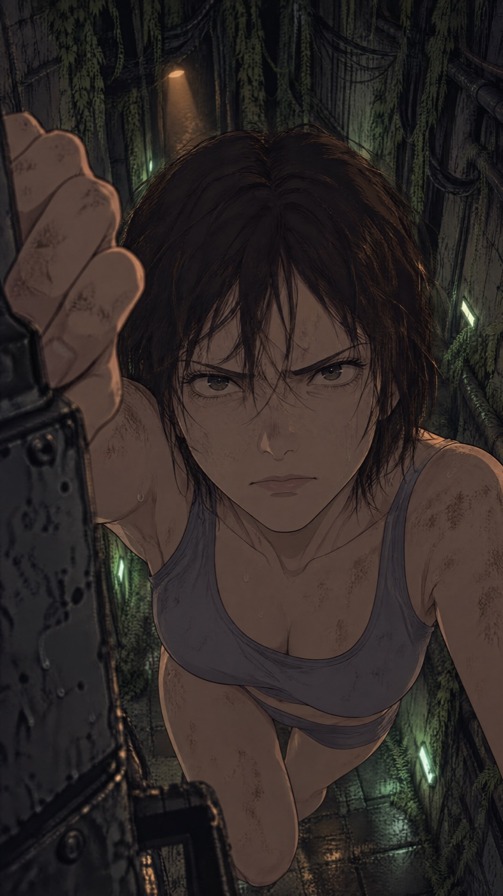
Her face and the ep4 register held. The body floats with nothing to climb on, but the glare carries the first second, and the first second is the one that matters on a feed.
Seedance kept the point of view for 1.7 seconds: the glare, then bared teeth as she pulls. Then it stepped outside the camera and filmed the camera itself tumbling down the corridor. The obvious fix was to keep the good part and fake the yank in post with a shake and a cut to static. Alex watched both and kept the weird one: "It's weird, but the animation is good."
Act 2 · the wall
The Goddess watches through her monitors, and the screens die one by one. Episode two already had a wall of thirty-seven empty screens with every rectangle mapped, so the whole scene cost nothing: each screen got a clip from episodes two to four, graded like the episode-four security feeds, and a time to die.
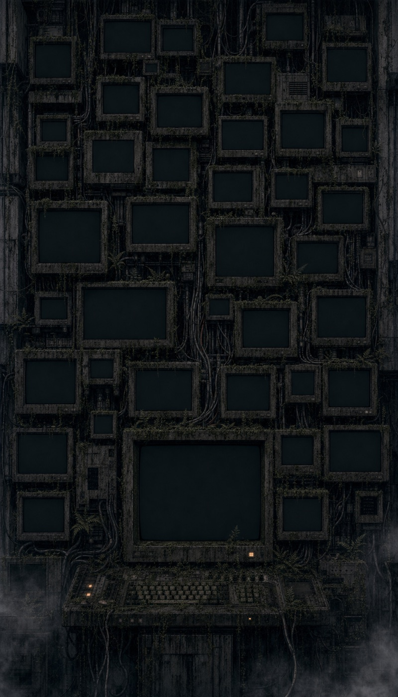
The chess tower. Built for a different joke in episode two, reused here with the screen map that came with it.
Three passes. The first had static that averaged out to flat grey cards at that size and a main screen that looped. The second showed the camera falling on the biggest screen, which Alex caught at once: the fall was the thing being fixed. The third replays her glare back and forth, then the yank, then static.
Act 3 · the treadmill
Two running shots, and they cost more than anything else in the episode. The first idea was her sneaking through a machine hall, seen from far. Alex: with that many cameras, sneaking makes no sense. So she runs and sprays the camera near her.
The second location was a side view of a flooded corridor, chosen because sideways she stays the same size. She did stay the same size. She also ran in place: legs pumping, barely moving, then a sudden slide out of frame. Alex asked if it was really Seedance 2.5. It was. A tight cut around the treadmill did not hide it either.
What fixed it was a second image: the same corridor with her gone and the camera already covered in foam. The end frame is an edit of the start frame, with the original pixels pasted back everywhere except her spot and the camera, so nothing else can drift. With only a start frame the model has no reason to move her. With an empty end frame she has to leave.
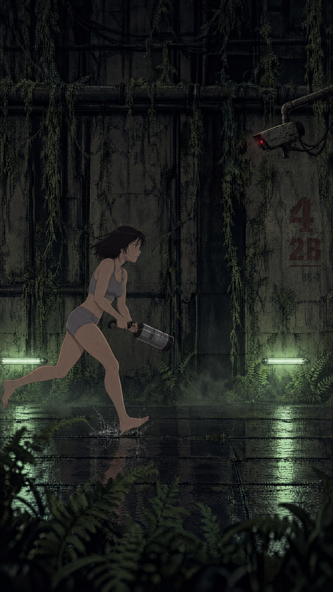
The camera hangs too high to hit, so the smash became a spray.
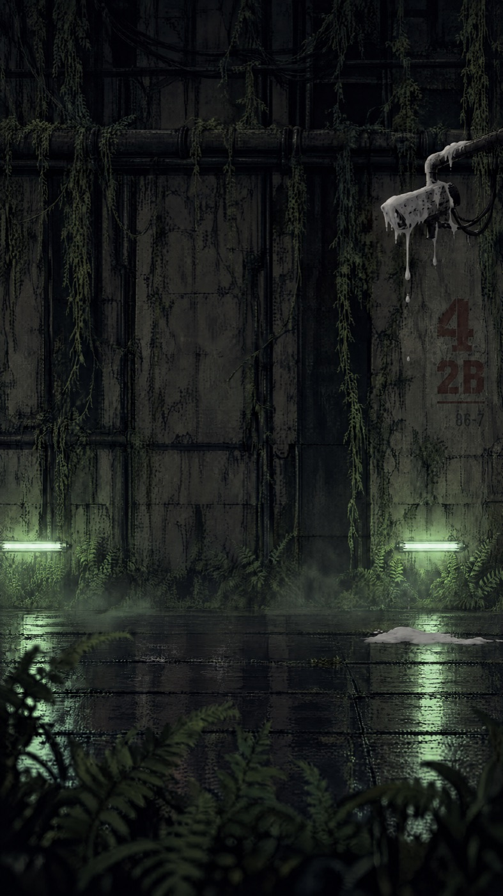
Same pixels outside two boxes. The first pass left the ghost of her leg reflected in the water; the box grew.
Cost of the lesson: two killed clips, $3.55, and one rejected cut. Every later shot where someone moves across the room was planned with an end frame from the start.
Act 4 · food
The turn of the episode: the Goddess takes care of the girl. The first plate put a tray of bread, tea and steaming soup on the canteen table under the lamp. Alex: the food should be a little less obvious. A vending machine is ship hardware that just happens to work for her.
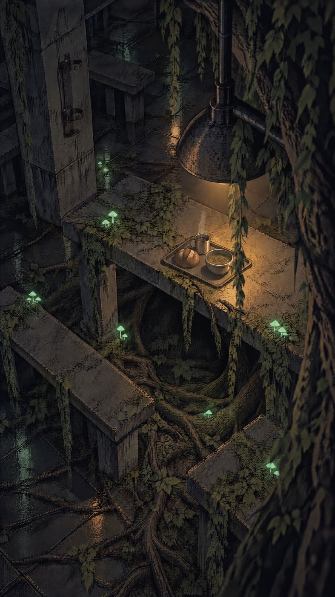
A meal set out for someone. The Goddess should never admit it in the picture.
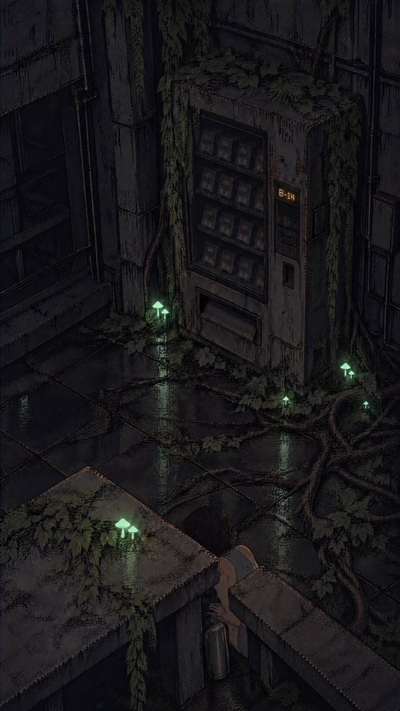
She approaches, looks for cameras, works the machine. Alex's staging, so the walk got an end frame on day one.
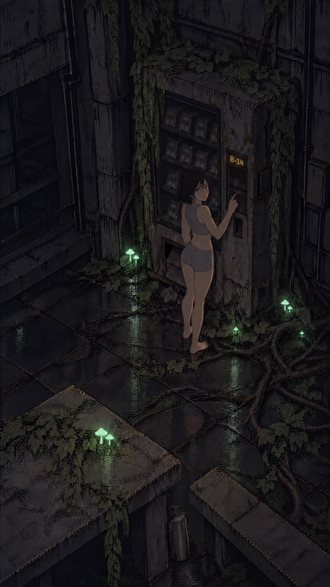
The extinguisher stays where she left it behind the bench.
The approach was blocked by content moderation on the first submit, most likely the end frame: a woman in shorts seen from behind. Blocked jobs are not charged, and it passed on resubmit with the provider's relaxed filter for ten percent more. The payoff, the dead machine waking up and flooding the floor with cold light, worked first time.
Act 5 · warmth
She sits curled up in a cold alcove. A vent beside her lights orange, she holds her hands out to it, then grabs the conduit above it and rips it off the wall. One plate, one eight-second clip, first try. The only beat it skipped was the look up at the red camera light, and the four scenes before it explain why she rips it out.
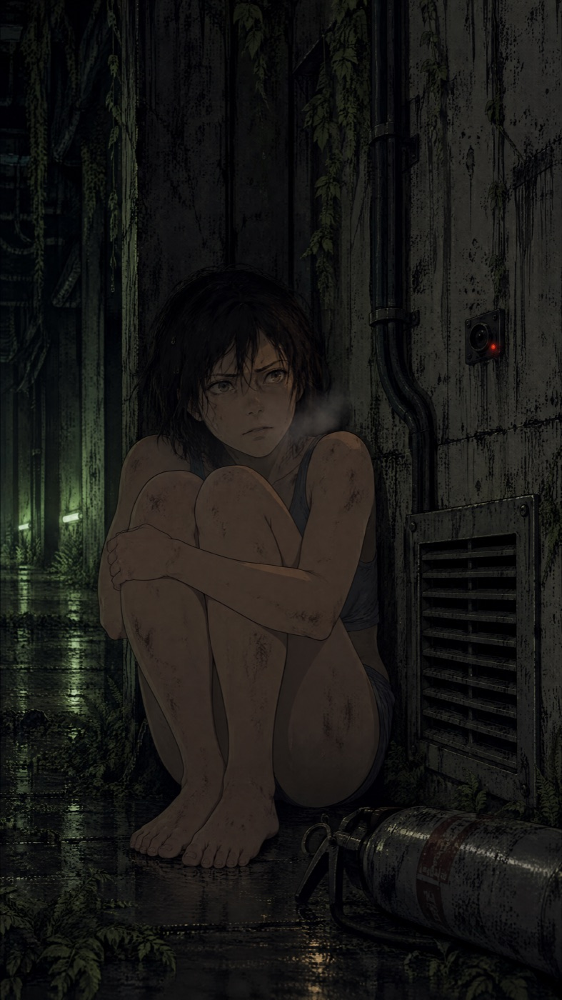
No blue frost. The series keeps cold blue for the pods, so the cold here is her pose and her breath, and the vent's orange is the only warm light.
Act 6 · the wire
The budget was fifteen seconds for the ending. Alex's fix for the jump to a new room was a line instead of a transition: the Goddess, for the first time not calm. It started as "Wait, not this wire!", became a calm "And this is not a good idea", and ended as a dry "This... is a really bad idea."
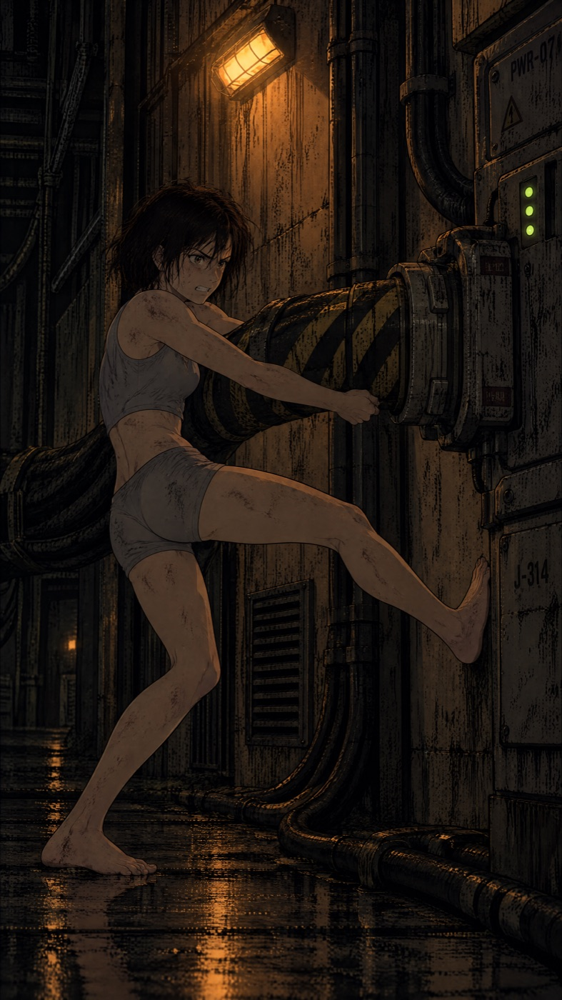
The best pose in the episode. Junction J-314, three green lights that go out.
The first blackout build brought back the ten screens that had already died in act two, and kept the static screens hissing in the dark. Continuity, fixed before anyone saw it.
Act 7 · the goddess
The first ending reused the red eye from episode two. Alex wanted a new Goddess scene: her sitting on a pile of computers, legs crossed, gorgeous, the camera pulling back and flying around her while she keeps her lens on us.
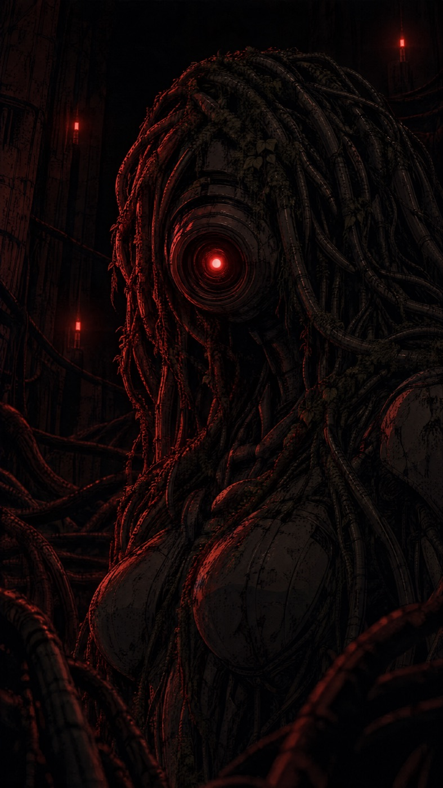
The first new look. Animated with LTX for $0.48; the cables rose like tentacles, but it was not the move Alex meant.
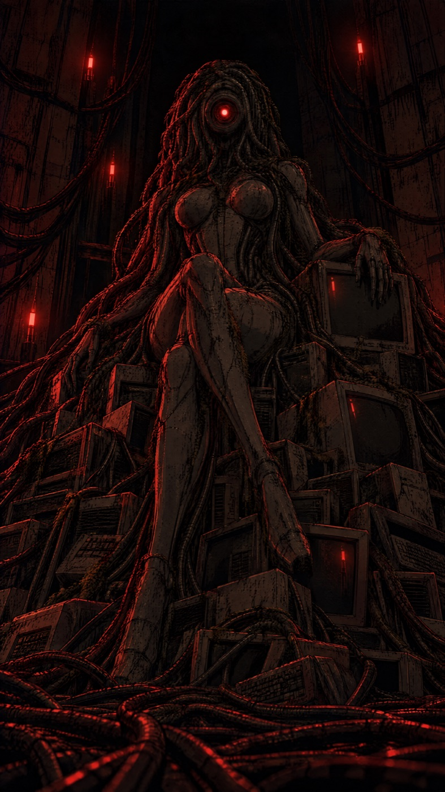
Described by intent, not by spec. "A perfect-body android, elegant and powerful, a queen." The one-lens face is restated in every prompt.
The first animation used a close crop of the plate as the start and the full plate as the end, the same trick that fixed the treadmill. It pulled back smoothly and barely moved sideways: two frames that both face the camera leave no room to orbit. Dropping the end frame let it fly around her.
The rule now has two halves: an end frame when someone has to cross the room; no end frame when the camera itself is the move.
Act 8 · voice
For four episodes the Goddess whispered. Hearing the full cut, Alex: "too dreamy, and some words don't sound as I want." Nothing was stretched. The whisper tag, the ellipses in the text and a per-line loudness filter that lifted every breath all pushed the same way. So every line went back to the booth, one at a time, with the old take first in each comparison.
Click any take to hear it.
The voice review surfaced a worse problem. Every multi-line rough cut had a broken audio track: a reported length of two hundredths of a second, decoding to silence. QuickTime quietly played the picture; VLC hung. Alex had approved six cuts on picture alone. The cause was mixing the voice in the same ffmpeg pass as the long video edit. Picture, voice and mux are now three steps, and every file handed over gets its audio measured first.
Act 9 · sound
The bed is generated in numpy: hums, drips, CRT whine, a click and a burst of static for every screen at its exact death time, sparks, a power-down sweep. It works for electronics. It did not work for a camera hitting a wall: "those are not the metal camera hitting the walls sounds."
ElevenLabs sound effects did, sliced hit by hit onto the frames where the camera strikes. Then they were too quiet, three times. Raising them inside the bed lowered everything else, because the bed is normalised to its loudest moment. Raising them after the loudness pass hit the limiter, because a foley impact is a spike with almost nothing behind it. The fix was to level each hit by its body, round off the spike, give the hits their own track after the loudness pass, and duck everything else for a third of a second under each impact.
| Where the money went | Calls | Spend |
|---|---|---|
| Seedance 2.5 video | 11 | $19.92 |
| GPT Image 2.5 plates | 12 | $1.56 |
| LTX 2.3 (the unused dark close-up) | 1 | $0.48 |
| ElevenLabs voice + sound effects | 19 | $0.24 |
| Killed or unused clips, of the above | 4 | $5.97 |
| Total | 43 | $22.20 |